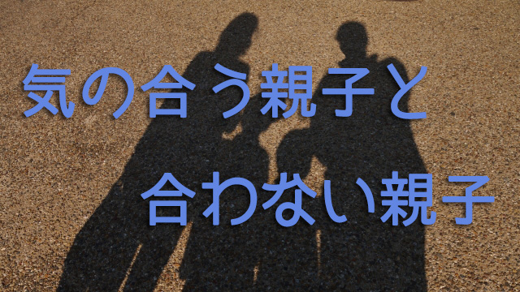

我が子なのに今ひとつ気持ちが通じ合えない！
そう悩む親に出会うことがある。中には「自分の子なのに十分愛せないのは親として失格ではないか」と罪悪感をもつ人もいるようだ。
だが実はこれは大きな問題とは思っていない。たとえば「長男とは気持ちが通じるが、次男とはうまく理解し合えない」とか「次女とはすぐに会話も通じるのに長女は何を考えているかサッパリ分からない」という話はよくある。ありふれた事例に過ぎないからだ。
私にも5人の子どもがいるが、全員とツーカーで話が通じ合えるとか気持ちを理解できるかといえばなかなかそうはならない。子どもたちの個性もそれぞれだし、親との性格的な相性や気質の違いもあるのでスレ違いは当然起こる。
だからこう考えると良い。親子であっても違う人間である以上、お互い完璧に理解し合うことは不可能だし理解し合えなくてもいい。また何人か子どもがいる場合、無条件に気持ちが通じて愛しく思える子もいれば、そう思えない子もいるがそれは気質の違いだから仕方ない。そう割り切ること。
要するに通常の人間関係と同じだと考えればいいのだ。ウマの合う人もいれば合わない人もいる。誰だって日常的に経験していることだ。親子だから家族だから、いつも仲良く愛し合わなければいけないという前提にいる限り、先の親のようにストレスや罪悪感を抱えることになる。
家族関係のストレスの大半は「家族なのだから互いに仲良く常に気持ちが通じ合っていなければならない」という強固な思い込みを前提としていることに起因している。
他人なら簡単に気持ちなど分かり合えないことなど当然と知っているから、理解できない人に出会っても罪悪感まではもつことはないだろう。
これと同じでたとえ親子であっても、うまく意思の疎通ができる子とできない子があるのは当然という立場に立てば不必要に悩むことはないといえる。
理解しにくい子に対して「この子は頑固だ」とか「性格が曲がっているのでは」などと問題視せず、自分には理解できないだけでこの子には別の個性（長所）があるのだと人間としてきちんと認める姿勢が大切だと思う。そうして他の子と平等に扱うよう心がけるだけで十分だ。
１．
むしろ問題があるとすれば、親からみて理解しやすい子との関係にあると言えるかも知れない。
どういうことだろうか。それは理解しやすいといっても、あくまで親の側からの見方であって本当の意味で「分かり合えている」とは限らないからだ。
たとえば長男や長女（いちばん上の子）によくあることだが、幼いころからのしつけなどによって親が自分に何を望んでいるのか敏感に察知し、先回りして親の要望や期待に応えようとする子がいる。親からすれば、言いつけを良く守る素直な子であり互いの気持ちも通じ合えているように感じるが実は子どものほうは自分の気持ちを押し込めているだけということもある。
こういう子どもは最悪の場合、人の顔色ばかりうかがい本音を押し殺して生きるハメになりかねない。子ども時代は親や周囲の大人から素直な良い子と言われる人に多いタイプだ。
親としては子どもをコントロールしているつもりはないのだろうが。無自覚なだけ厄介だと言える。
だから「分かり合えている」といって安心してはいけない。一見素直で理解しやすいように見えていても、それは子どものほうが親に合わせているだけかも知れない。本当の自分の気持ちを押さえ込んでいるのかも知れない。
たまにはそう考えて子どもの気持ちに思いを巡らせてみることも必要だと思う。
子どもが親を忖度してしまう例は他にもある。こちらは少し深刻な問題をはらむ。
２．
それは夫婦の不仲や嫁姑関係など―つまり子どもと直接関係ない―家族間の不協和があるとき、親はつい「通じ合える子」と過度に密着してしまう場合だ。
特に夫婦の間柄がうまく行っていず、満たされない気持ちを抱えている母親が「分かり合える」ほうの娘を無意識に味方につけてしまうケースがある。
以前の記事にも書いたが、ある種の子どもは親が不幸せだと自分の責任のように感じて親に同情し親の気持ちを過度に忖度することがある。
そうなると、むしろ娘（子）のほうが母（親）をケアする側に回って親が子に依存するという逆転現象が起こりかねない。
母親のほうは「そんなつもりはない」と言うだろうが、厳しくいうなら人生の重荷（自らの不幸）を我が子に背負わせているわけで、これは言うまでもなく子どもの将来に暗い影を落とす。
こういう依存関係は、なまじ気持ちを分かち合える親子だからこそ起こる悲劇なわけで、分かち合わないタイプの子だと冷静に親と距離を置ける分むしろ被害は少ない。
こう見てくると、気持ちが通じ合える親子だから良い親子関係だとばかり言えないことが分かるだろう。気持ちが通じ合うからこそ一歩間違えると相互に依存し合う（共依存）関係にもなりかねないということだ。
これを免れるためには、親の側の自立と自制が大切になってくる。親も一個の人間である以上悩みも苦しみも不幸な時期もある。だが、子どもをそこに巻き込んではならない。子どもを不幸の道連れにしてはいけない。
不幸であってはいけないと言ってるのではない。不幸なのに子どもの前で幸せのフリをしていろと言うのでもない。そんなことは子どもにすぐに見抜かれる。ではどうすればよいのか。
いま万一不幸なら不幸である現状を認めること。その上でその現状としっかり向き合うこと。逃げずに向き合いながらそれでも自分の人生を少しでも明るい方向へ進める意思をもち続けること。
つまり親としてというより一個の人間として人生と向き合う姿勢を見せることだ。
自分と気質の合わない子に過度に気を使うこともなく、気の合う子に依存するのでもなく1人の人間として人生と向き合う自立した姿を示し続けることこそが逆説的には子どもにとって最良の教育となるだろう。